应用举例
目前已经有众多很出名的跨平台桌面应用都是用Electron开发的。
举例如下：
- Atom
- GitHub 用 Electron 开发了 Atom
- 截图
- Win
- 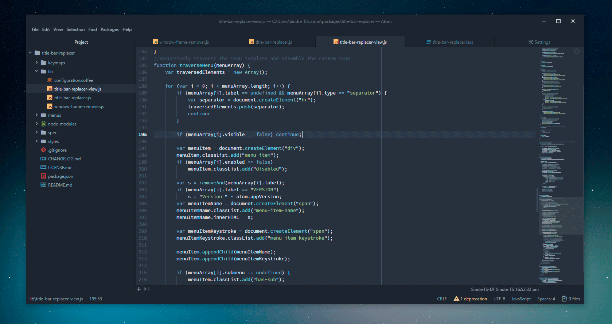
- Mac
- 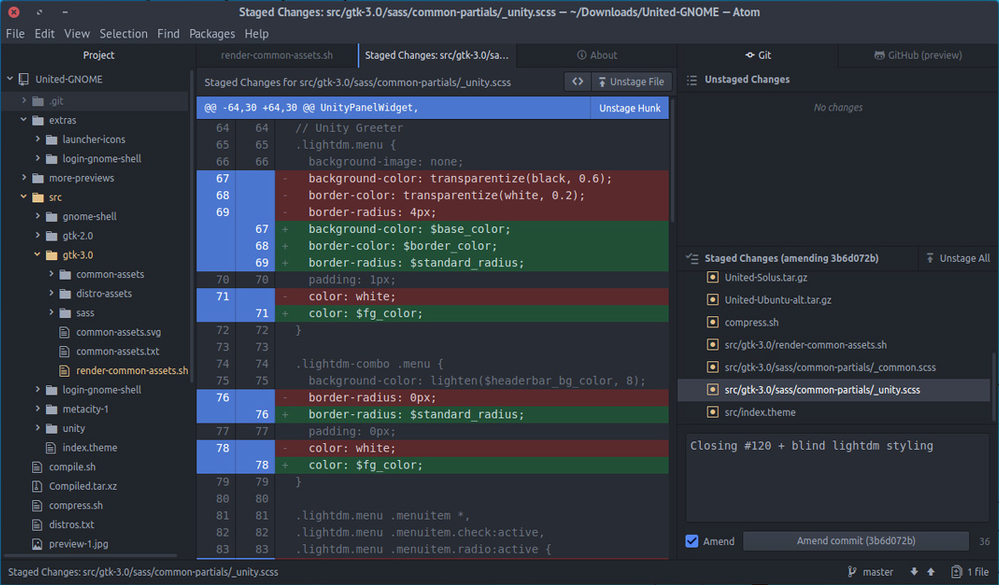
- Win
- Visual Studio Code
- 微软 用 Electron 开发了 Visual Studio Code
- 截图
- Win
- 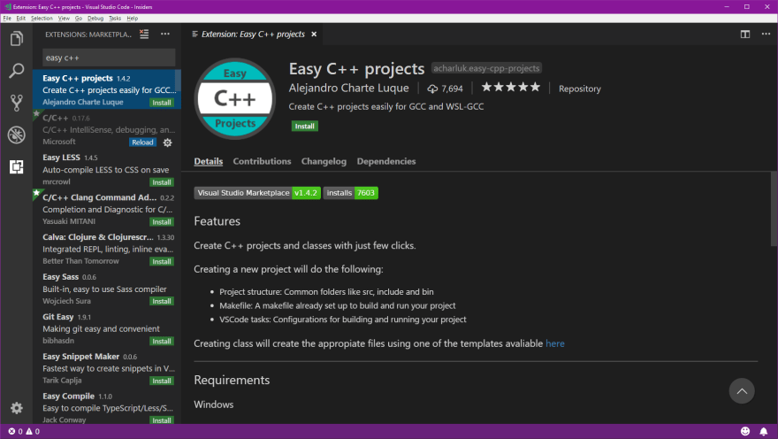
- Mac
- Win
- WhatsApp 桌面版
- 截图
- Win
- Win
- 截图
- MongoDB Compass
- MongoDB 用Electron开发了 MongoDB Compass
- 截图
- Win
- 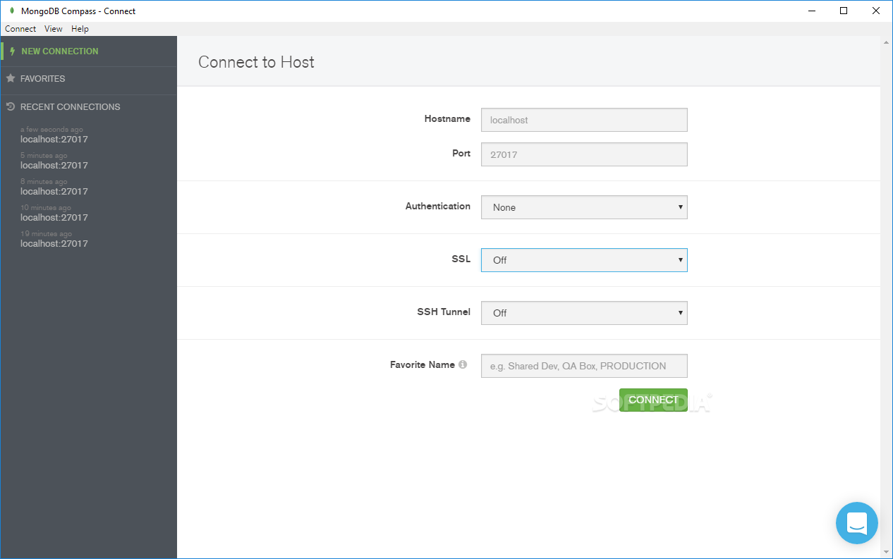
- Mac
- Win
- 迅雷X
- 发布于2018年的迅雷X
- 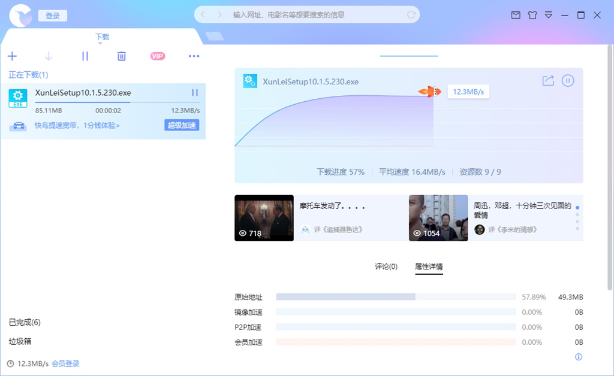
- 发布于2018年的迅雷X
- InVision Studio
- 截图
- 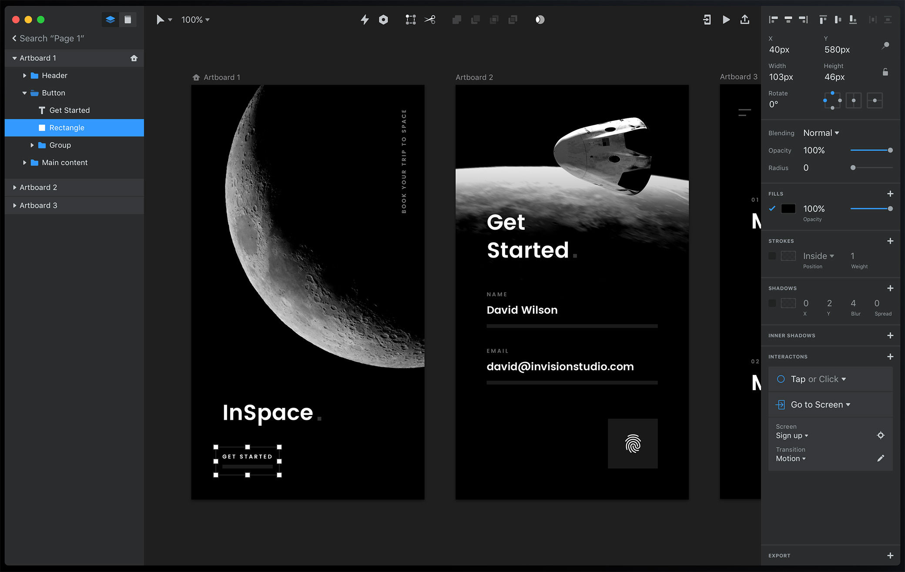
- 截图
- Slack
- Slack 用 Electron 开发了 Slack
- Microsoft Teams
- Twitch


更多例子详见官网
单独举例：用Electron可以开发出足够复杂的应用
之前某人用Electron开发出一款足够复杂的应用。举例如下，供了解：
多皮肤实时切换：
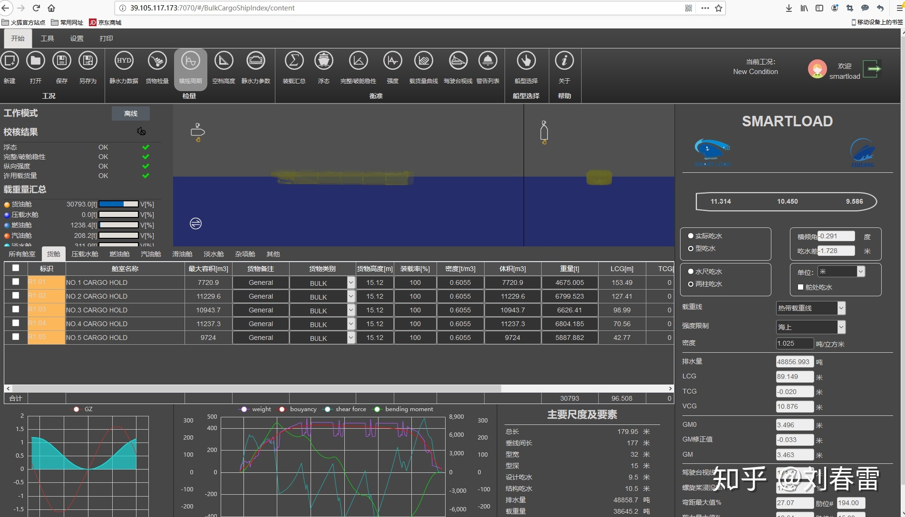
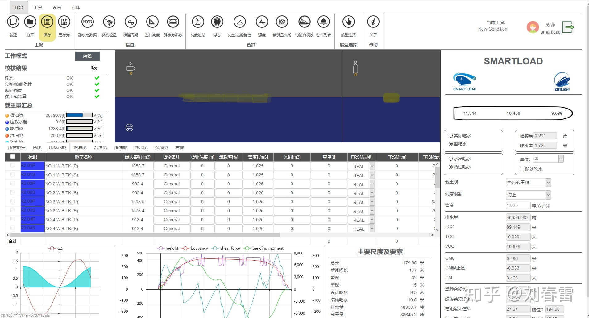
集装箱船 任意放大缩小 拖动：
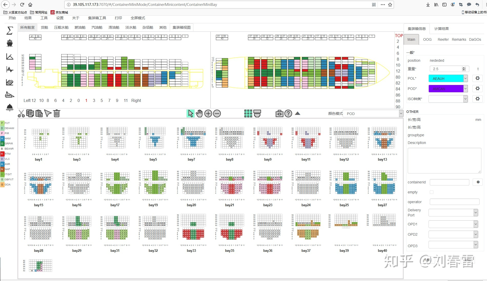
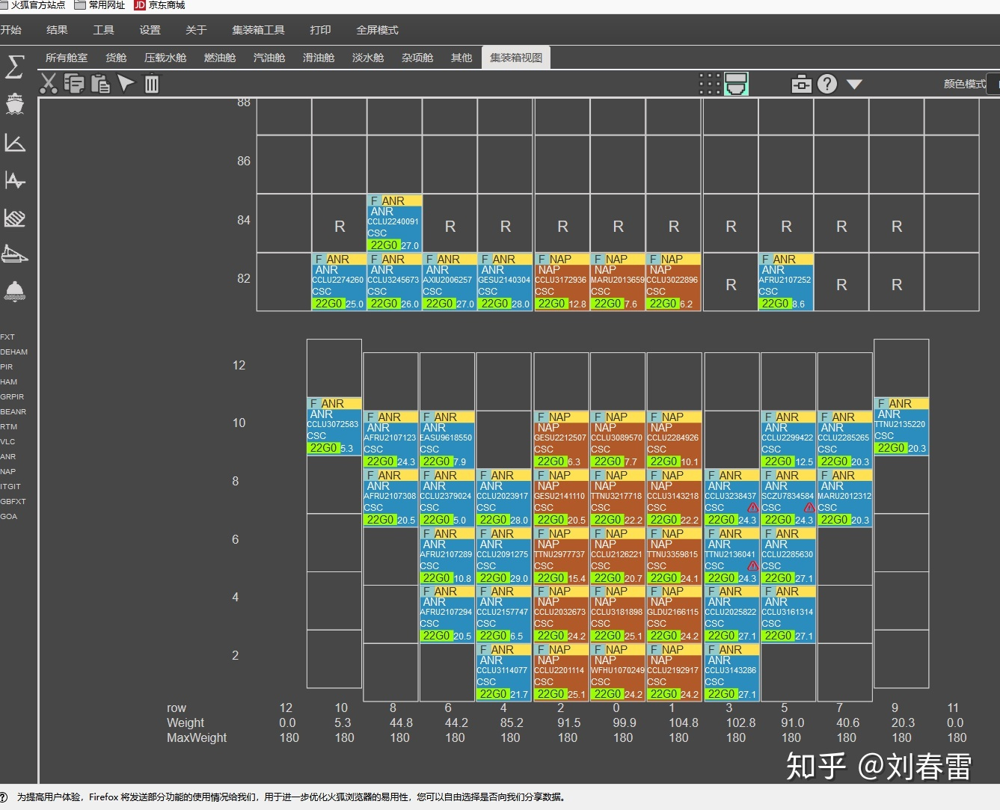
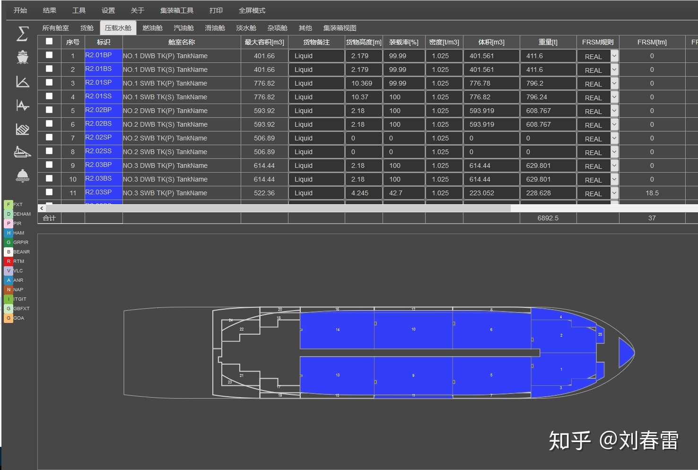
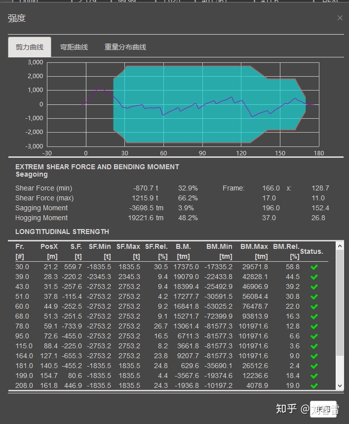
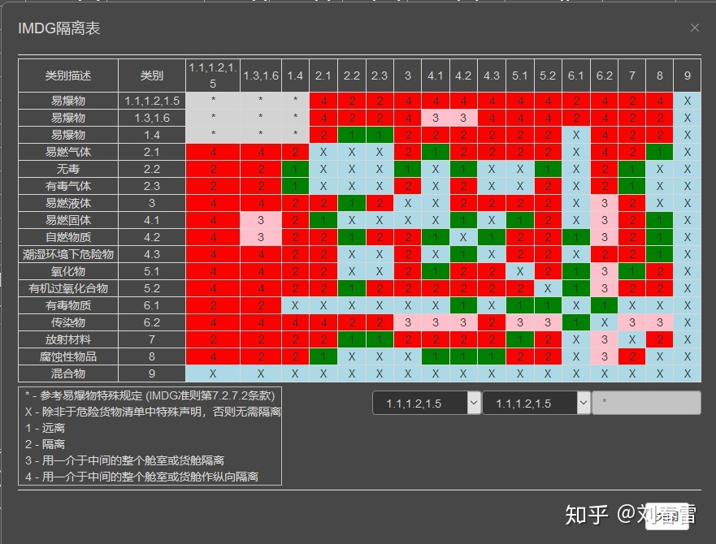
html5 网页版 安卓版：
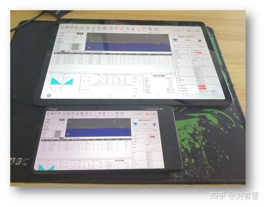
增加了Web 3D显示，放大缩小旋转拾取：
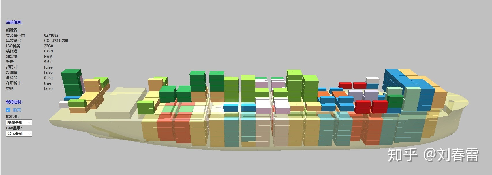
主界面功能布局做了调整：
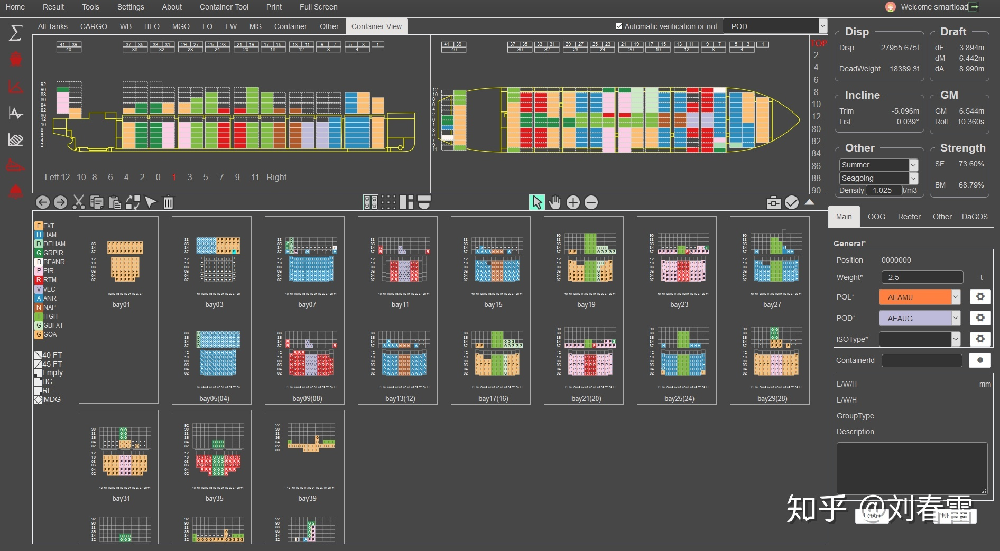
窗口折叠：
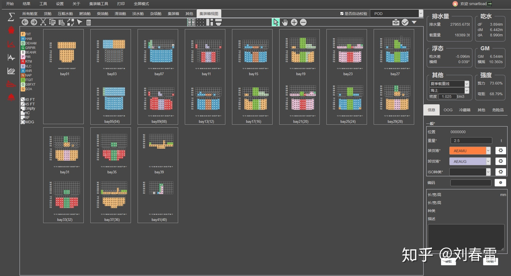